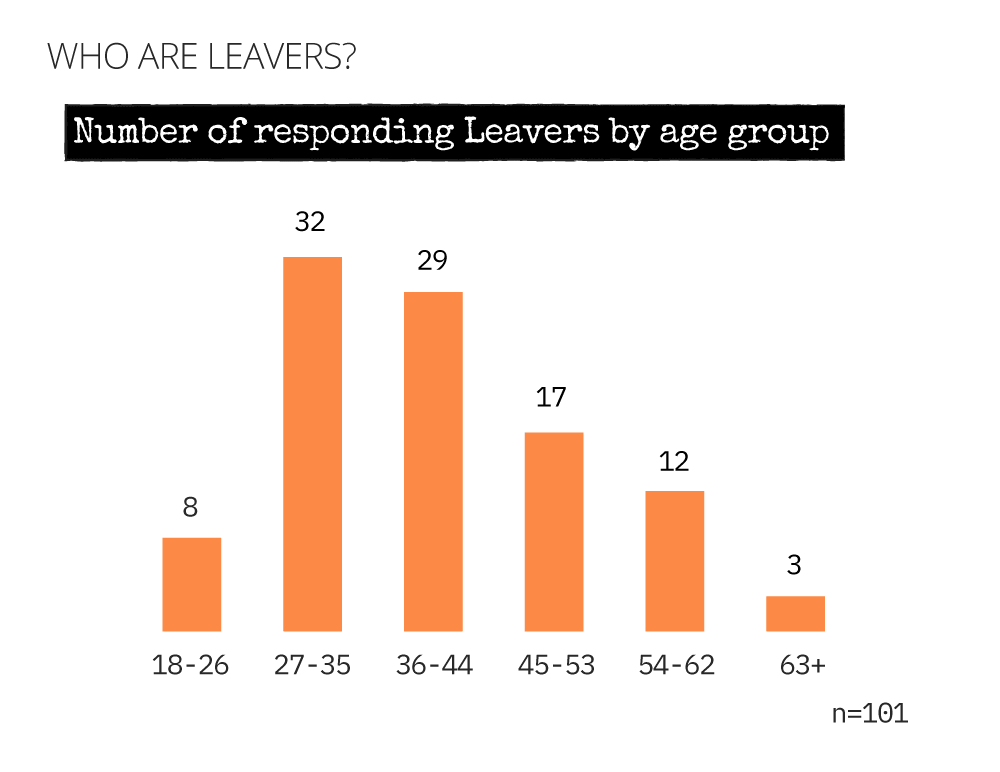
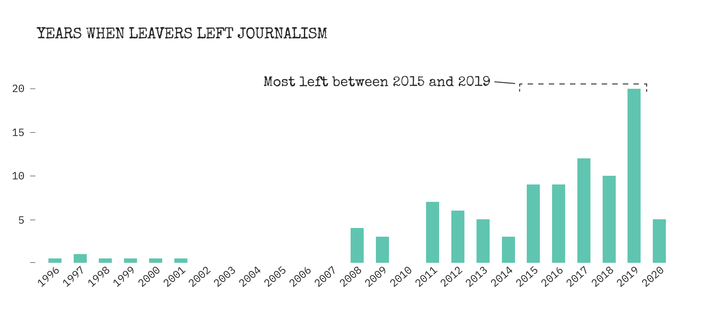
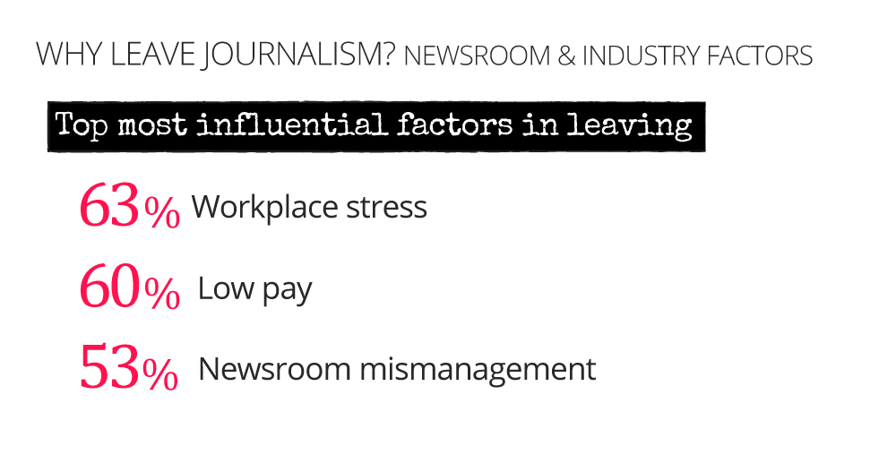
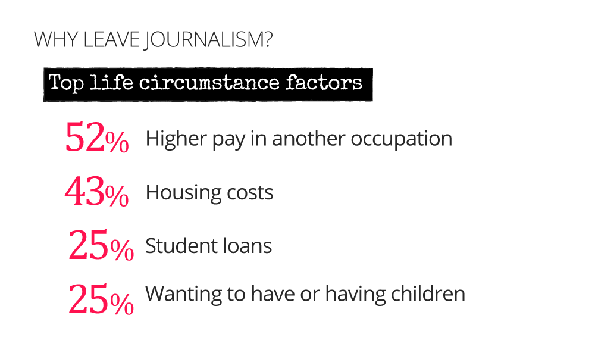
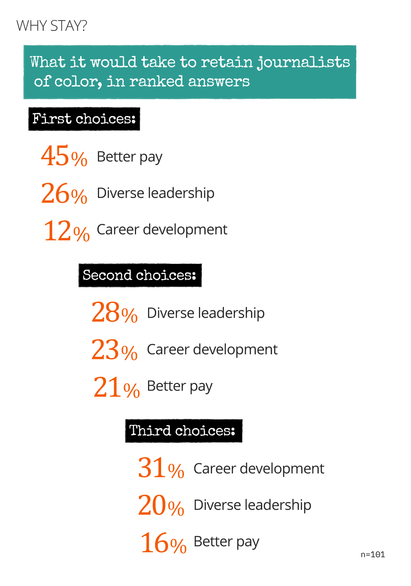
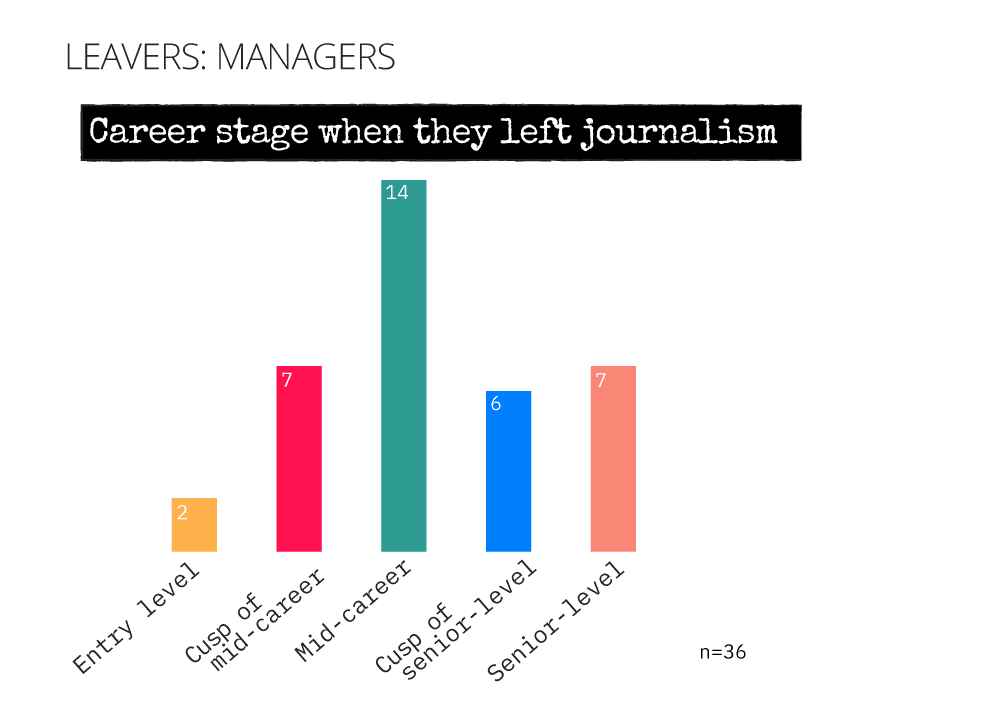
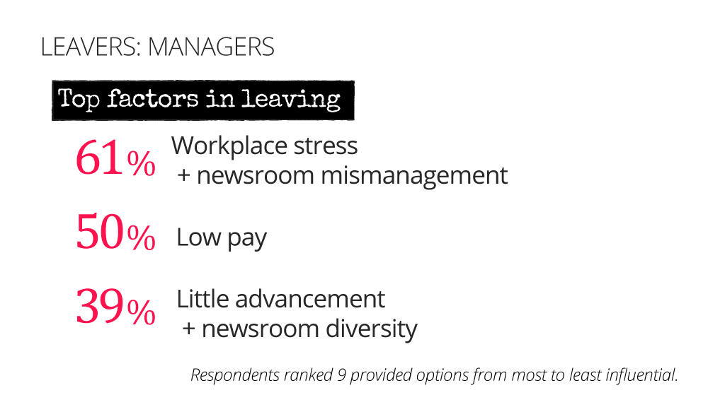
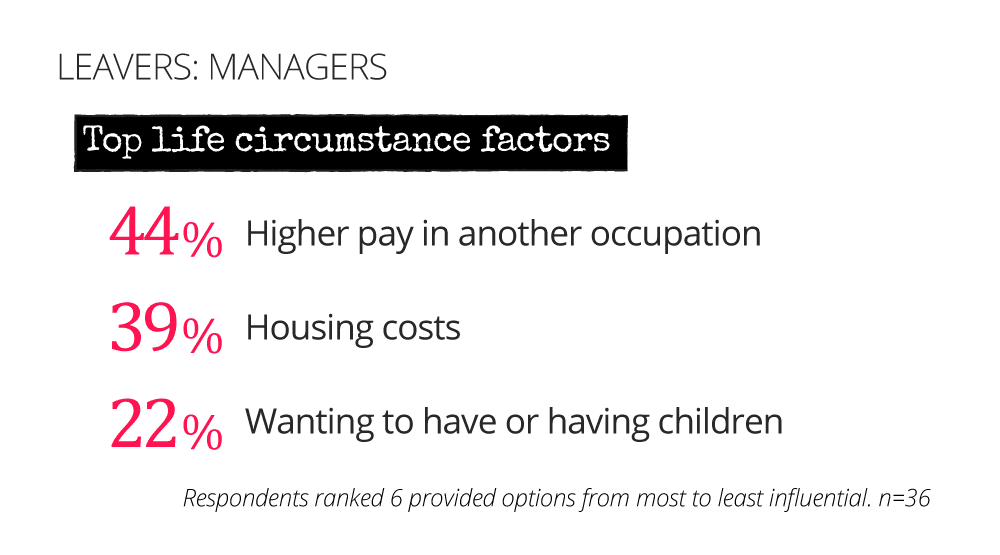

Results from the 'Leavers' survey of 101 former journalists of color conducted Feb-March 2020 to understand when and why they left the journalism industry, as race/ethnic representation and accurate coverage remains a challenge in U.S. newsrooms. Read the introduction to the survey.
A typical 'Leaver' profile emerged from the responses to the survey. Scroll to explore a more detailed demographic picture of all 101 respondents.

To capture the race/ethnic diversity within the catch-all term, JOCs, the survey allowed respondents to self-identify from 9 provided options (below) and/or write-in a response. One respondent selected 'Prefer not to say'. Write-in descriptions were: 'Brown'; 'Puerto Rican'; 'Southeast Asian'; 'BIWOC'; 'Half white'.

The numbers below reflect respondents' chosen identities. Because of overlap they should be understood as a count of identities, not respondents. For example, 53 respondents identified as African-American or Black (47 respondents selected AA/Black, only and another 6 selected AA/Black and other race/ethnic identities). This is a sampling of the communities, culture and heritage represented by these former journalists.
| # | Selected identity | |
|---|---|---|
| 53 | - | African-American or Black |
| 25 | - | Hispanic or Latino(x) |
| 11 | - | Multi-racial, including White/Caucasian |
| 10 | - | East Asian |
| 6 | - | South Asian |
| 6 | - | Middle Eastern or North African |
| 4 | - | Native American or Alaskan Native |
| 2 | - | Southeast Asian |
| 1 | - | "Brown" |
| 1 | - | "BIWOC" |
| 1 | - | Other American Indigenous (non-U.S.) |
| 1 | - | Native Hawaiian or other Pacific Islander |
| 1 | - | "Puerto Rican" |
| 1 | - | Prefer not to say |
81% of 'Leavers' are women (see Methodology for a description of survey outreach).

The vast majority of survey respondents were in their prime working years, ages 27-44.
Most respondents (58%) worked primarily in Print (digital + newspapers/wires), followed by Broadcast (28%) and then Digital only (14%). Among Digital Only respondents, the initial year of first job in journalism is 2002. Among Broadcast respondents it is 1990. Of 19 total male respondents, 17 primarily worked in Print.

'Leavers' entered journalism via internships, etc as early as 1966, with the first female Leaver entering journalism in 1980. Below shows the years when they left journalism. Most Male respondents (63%) spent 9-15+ years in the field. For women, most worked 4-8 years (44%) followed by 15+ years (23%) and 9-14 years (22%).
At the time they left journalism, 70% of 'Leavers' were on staff. Of the 30 who'd been freelancers, nearly half (11) say they were under-employed at the time they took the survey. All 11 are women. (Of 101 respondents, nearly one-third (29) say they were either under-employed or unemployed at the time they took the survey).

Of the 21 respondents who said they had never been employed full-time with benefits while journalists, most (62%) had spent 4-8 years in the field.

Most 'Leavers' (65%) left journalism because "they decided to"—not because they couldn’t find sufficient or any work; company downsizing, restructuring or buyout; nor retirement. To understand why, Why leave?go to Why leave?.


Journalism identity is "sticky". Despite their work experiences and having left the industry anywhere up to 24 years ago...

So, what is it about journalism that encourages this high level of self-identification? "Viewing journalism as a public service" was the top factor motivating 'Leavers' in every age range to become journalists...

... followed by the work of journalism. The 4th most popular factor among former JOCs was the "opportunity to shape coverage of race/ethnic group".

And although most 'Leavers' (57 respondents) viewed journalism as a "Calling" or "Mission" at the start of their careers, by the end, most came to view it as a Job or worse.

Many more respondents found the 5 provided options insufficient to describe their view of journalism towards the end of their careers. Among those who wrote in responses, the most dire reflections came from 'Leavers' who'd primarily worked in Broadcast followed by Digital only.
"Still identity, but like when your identity is also a disease you have: something weighing me down every day."
"Dead-end perpetuated by privileged gatekeepers who got their lucky break when journalism was still a viable career"
"Death march"
"Not what I was doing"
Call to action
Sharing and contact icons here this is a static
Recall that most respondents (65%) left journalism because they decided to—not because they couldn’t find sufficient or any work;; company downsizing, restructuring or buyout; nor retirement. To better understand their reasons, the survey asked respondents to rank 9 provided Newsroom + Industry influences on their decision to leave, as well as 6 Life Circumstances. Scroll down to hear from 'Leavers' in their own words.
 80 'Leavers' shared why their views of journalism changed over the course of their careers. Select responses illustrate dominant themes .
"It was clear management didn’t care about “journalism.” Just ratings, clicks, sensationalism... Hours were bad, pay was bad, management was horrible. Expectations were unrealistic and ridiculous. I still maintain that the only people still in the business just want to be on television. I resent my experience in news so much. Sometimes I wish I’d studied something else."

“I felt like my talents were ignored or sidelined in favor of clearly less talented or qualified non-black journalists, routinely. ...I rarely got the support or mentorship needed to thrive… and it left me deeply disheartened that in the upper echelons of journalism, diversity can often equate to tokenism, and that, regardless of your pedigree (two degrees from top-tier schools, including an Ivy League j-school), that blackness can be as much an asset to [managers] in the newsroom as a liability…”
“…I often felt like I was being preyed on. I trusted white, female bosses to be my allies, but in the end, it felt like they tore my heart out and stomped on it. I wasn't allowed to own my ideas — they were theres[sic] and they took them without the value of years of my work that went into formulating them. I'm still a bit heartbroken, but ready to come back to journalism…"
"It was draining... constantly not being heard when I would stick up for people of color, dealing with white managers who were disconnected from the city, also dealing people in power who weren't qualified... It wasn't fun, I felt like I wasn't making a difference..."
"I was paid a lot less than white men and sick of it."
"My view of journalism as a calling has never changed. I teach future journalists. But as a woman of color my ability to advance in the profession was limited."
“[I was a] contract worker who was illegally denied overtime, and used as a fulltime employee, complete with responsibility of managing/hiring/firing employees, all with no status or safety. I was unceremoniously cut at the end of one of my many, many "3-month contracts" — but not before my managers attempted to cut my pay by 40%. …Jumping ship to a different company would have meant significantly less pay (and often the same abuses), a trade-off I just wasn't willing to make.”
"I saw how the donuts were made in the business of digital media — a very disillusioning experience. Also experienced a lot of exploitation and outright illegal treatment from an employment-law standpoint (as have many many of my colleagues)."
“…I realized I was at a severe disadvantage in my last two years of university when I couldn’t afford to go on elaborate international reporting trips or take a summer/semester off to another city to do an unpaid internship. I also acknowledged the lack of mentorship from professors because of these and other contributing circumstances. Once I graduated in 2013, I couldn’t find any full-time work and freelanced for as long as possible. …I realized that although a younger me viewed this career as a calling, by the end, it was just an unsustainable job that I needed to get out of if I wanted to ever advance in my career and life.”
"The financial element was difficult as I did not receive financial support from family. I began to notice those who excel are white from privileged backgrounds which allowed them to only focus on journalism because they were financially secure."
"I honestly believed all the things people said about it being a special line of work you're called to. I was told many things and being young and desperate to fit in somewhere, I didn't acknowledge the red flags that this was not a good way to make a living, despite how badly the industry claimed to need people like me (black women with bright ideas).”

“By the time I left it felt like the industry was a ticking time bomb. Who would uphold the fifth estate and who could afford to take the vow of poverty that is being a journalist? (As a single mom, I couldn’t face the uncertainty in [sic] top of the pay ceiling.)”
"The industry was becoming harsher, expecting more with less time and money, becoming more about clicks than conduct and was ultimately a stressful burden crippling my mental health."
Call to action
Sharing and contact icons here this is a static
'Leavers' have an incredible wealth and breadth of experience. When asked what it would take to retain JOC in newsrooms or in the industry, they ranked their 1st-3rd choices from 9 provided options:
95 'Leavers' responded to the question, what, if anything, would have stopped you from leaving your occupation as a journalist? Select responses illustrate dominant themes .
JOC 'Leavers' would have stayed if...
"On time payment, better payment, stipend for travel costs, recognition for all of the times I stepped in when no one else wanted to cover a story."
More money and support from my newsroom. I really enjoyed my last market, and ultimately I wanted to stay...".
"Newsrooms rising up to meet the challenge of the future by paying black women what they’re worth and believing them when they say so."
"We needed to accept the newspaper business' new reality in today's society. Stop overworking your employees. If you work 12-15 hours a day and then go home to work more, or work on every holiday or on your weekend, that is NOT OK. And it's not OK to make a journalist feel like lesser of a person when they consider their well-being over work. Too much needed to change, but none of it I knew would change."
"I left due to sexual assault by photographers and was forced to sign an NDA. I would have liked to stay if I was allowed to tell employers why I left. But I was black balled by news directors."
"Better job security (I'd survived multiple rounds of layoffs and buyouts by that point); a sense that the company would be owned by non-evil people who actually cared about journalism; a work life that's compatible with being a parent to a young child."
"Being managed well."
"A big raise/promotion and a willingness for the paper’s leaders to confront misogynistic and racist patterns."
"I wanted to transition to investigative work but found the unspoken rule to be news directors like primarily white talent in this role, usually men although there are some women. NDs find white men give the illusion of more authority in investigative work - rather than actually looking at the quality of their journalism."
"If my bosses had been serious about investing in me and my professional development, whether through promotions or just cultivating my abilities, I likely would have stayed. I would have felt like my input was valued. I think what really ripped my heart apart was the fact that I felt like I did just about everything right (paid my dues, networked, bolstered my resume, etc.) and it still wasn't enough, in part because the game was rigged."
"If I thought management was open to listening and if journalist of color had some support system on the job."
"Better work-life balance, less toxic work environment ... I was burned out and had to leave for my own mental health/well-being."
"... a work life that's compatible with being a parent to a young child."
"My health was in decline towards the end of my newsroom experience because of stress and anxiety. Any help from management or leadership with changing my situation would have helped me to not leave."
"Therapy."
"It’s tough being a black woman in television news. If you’re a serious journalist you’re perceived as “angry.” I was once told I didn’t smile enough. If you advocated for a different angle in storytelling you were often dismissed. Corrected a millennial, you were intimidating. That coupled with how social media changed how we covered news left me burnt out and depressed. Had I not felt that way day in and day out in good of the daily stress that comes from working in TV news I may have stayed."
Call to action
Sharing and contact icons here this is a static
It is striking that more than one-third of 'Leavers' say they had managerial duties at the time they left journalism. Most (25) left journalism between 2016-2020, and most (27) say they left journalism at or after their mid-career point (see below). Leaver managers are ages 27-44 and more non-Black than the overall sample. Of 19 total male respondents, 9 say they had managerial duties at the time they left journalism.
Leaver managers had slightly different reasons for leaving journalism when compared to the rest of the sample. Among managers, Newsroom Mismanagement ties with Workplace Stress as their top influences, and Little advancement and Newsroom Diversity make their cut.
 Call to action
Sharing and contact icons here this is a static
Leavers Methodology
'Leavers' is a 44-question online-only survey of former journalists of color that opened for responses February 19-March 9, 2020. A “Leaver” was defined to respondents as someone who had, “left the occupation after any period of time, for any reason, including those who moved into non-journalist occupations within the journalism industry.” View the Survey questions.
Recruiting
This project recruited respondents using the snowball sampling method, along with targeted, repeat outreach to the affinity organizations—NAJA, NLGJA, JAWS, NAHJ, AAJA, SAJA, NABJ, and AMEJA— some of whom then shared a form letter invitation with their members. (Outreach to AMEJA started later than the other affinity groups; I wasn’t aware of its existence when the survey went live) The survey was initially shared through Carla Murphy’s private accounts via Facebook, Twitter, JOC slack (in relevant channels), and LinkedIn. On request, JOC influencers (i.e. Nikole Hannah-Jones at the New York Times, Arun Venugopal at WNYC, Gustavo Arellano at the L.A. Times) spread the word to their communities, typically via RTs on Twitter or e-mail.
SQ44, the last (and optional) question on the survey, asked respondents to suggest former JOCs by adding their e-mail addresses. Twelve (12) respondents entered e-mail addresses. The survey was sent to all 12. None of those e-mail addresses took the survey.
Altogether the survey was directly shared to about 60 individuals (representing various racial/ethnic communities in journalism, foundations, academia, and communications) and group lists, including: Labor communicators listserv; pcdc listserv; the ‘What’s Your Plan B?’ FB page; ‘Life after Journalism’ FB page; etc. (Will share full list on request)
Given resource limitations, this project did not seek to recruit a representative sample of JOCs in the industry.
Respondents
n=101. There were 102 survey respondents, but during data cleaning it was discovered that one respondent was still in journalism. That response was excluded from analysis.
Questions
For ease of analysis most questions were quantitative, and excluding write-ins for zip code or e-mail address, for example, 5 were substantively qualitative (see below). Questions were also: multiple choice, limited response, ranking order, and multiple checkbox.
The “Pathways II: Just after leaving” section was excluded from this analysis. Due to unclear question sequencing, some respondents incorrectly sequenced three of the four questions in the section.
The manager’s question is SQ25, “Your last role as a journalist included managerial duties, i.e. responsible for junior staff or freelancer outcomes.” It is worded to focus on duties, not a manager’s title, in recognition of a common practice within the industry of assigning job titles that may not communicate the worker’s duties.
The career stages question is SQ29. It is written to allow respondents to self-determine their own stage and select one of five options: entry level; on the cusp of mid-career; mid-career; on the cusp of senior level; senior level.
Questions were often duplicated to act as internal checks on responses (for example, to triangulate reasons for “leaving”).
Before they were finalized, survey questions went through at least three iterations with a select group of reviewers that included current journalists and media communication researchers.
Qualitative questions
Respondents’ answers were coded by dominant themes. Every effort was made to avoid inference; statements with unclear or questionable meaning were excluded from the analysis. A PhD candidate in a field unrelated to journalism was sub-contracted to read behind me and fact-check that my takeaways accurately represented the responses. The non-journalism perspective was important, as she was most struck by repeat descriptions of toxic work environments and labor exploitation and concerns regarding mental health and well being. Her coding and impressions made me realize that I’d somewhat ‘normalized’ exploitation and high levels of stress. I explain this via the following: I came up in journalism when its business model had already started to fail, and I’ve spent the bulk of my career in the industry’s “outer-ring,” i.e. as a communities journalist, as a freelancer, or seeking to report stories for non-white audiences. This outer-ring, like newer Digital-only properties, may be more vulnerable to abusive practices.
'Leavers'’ qualitative questions
SQ15: If you answered “yes” [to still identifying and thinking of yourself as a journalist] please share your reason why.
SQ22: If your view of journalism changed from beginning to end, please share your reasons why.
SQ36: At the time, what, if anything would have stopped you from leaving your occupation as a journalist? [respondents were given the option to mark “private” if the answer related to family, illness, etc]
SQ41: Name a forward-thinking package, project, innovation, convening or person to come out of a newsroom/the industry in the past few years.
SQ42: What is the one word that best describes your work experience within newsrooms or the industry?
Raw Data
Survey respondents were told that, “All identifying information will be anonymized; e-mail addresses are for this project's work, only, and will not be shared.” During cleaning, analysis, write-up and Web design, raw data was stored on computer harddrives and a shared Google Drive. At project’s end, i.e. on publication of results, all project data will be transferred to long-term secure storage.
Strengths and Weaknesses
The strength of 'Leavers' is the breadth of experience, time spent in the industry, and the race/ethnic diversity captured by the sample. I’d set out to test whether 'Leavers' left journalism at mid-career, and this was corroborated. Another strength was that survey design enabled respondents to self-identify their race/ethnic identities, choose not to say or write-in a response. The descriptor, “of color,” is a U.S.-centric term. Given that, I extended invitations to all race/ethnic affinity groups with the expectation that some members would not view themselves as, “of color.” When questioned if this survey considered an individual “of color”, it was explained that the decision was theirs. A corollary strength, then, is the surveyor’s identity, background and track record on interpreting race, class and immigration/diaspora issues. This, along with a demonstrated understanding of the diversity of race/ethnic identities and the contours of the journalism career path, may’ve encouraged respondents to fully and candidly reply to the qualitative questions.
The weakness of 'Leavers', a survey of work experience, is that it captures neither income nor wealth information. Those questions were excluded, it was initially thought, to increase the likelihood that former JOCs would take and finish an online survey run by an individual and not an institution. Another weakness is that while the survey initially set out to understand JOC pathways and employment status immediately after leaving, the “Pathways II: Just after leaving,” section had to be excluded from analysis.
Call to action
Sharing and contact icons here this is a static
Resources for the public, journalists and newsroom leaders
- OpenNews’ DEI Coalition for Anti-Racist, Equitable, and Just Newsrooms
- A study of pay at the Washington Post, WaPo Newspaper Guild.
- ‘I just don’t hear it’: How whiteness dilutes voices of color at public radio stations, Laura Garbes, Ph.D. candidate in sociology at Brown University, The American Prospect, and follow @freepublicradio on Twitter.
- Coverage of protests illuminates journalism’s race problem, PBSNewshour (w/Dorothy Tucker, president, NABJ and Norman Pearlstine, executive editor, L.A. Times)
- Letters from the Black and Latino caucus to management, L.A. Times Guild
- Sample newsroom response to their communities: Rochester Democrat and Chronicle (Sept 2019); Detroit Free Press and Fort Collins Coloradoan (Aug 2020)
- How are you going to meet the moment: A call for journalistic action, a talk by Martin Reynolds, co-executive director, the Maynard Institute
- The Journalism Crisis Project, Columbia Journalism Review
- The Objective, Gabe Schneider and Marlee Baldridge
- Media Inequality & Change (MIC) Center, Rutgers + UPENN Annenberg
The survey questions
Call to action
Sharing and contact icons here this is a static
CREDITS
Carla Murphy: Leavers' survey concept, design and analysis + author
William Lager: Digital design and production, visualizations and edits
Mazin Sidahmed: OpenNews article editor
Funded by: News Integrity Initiative at the Craig Newmark Graduate School of Journalism
Presented by: 
THANK YOU
Jenny Choi, News Integrity Initiative
Erika Owens, Sisi Wei and Ryan Pitt of OpenNews
Charmaine Lang, PhD candidate, Echoing Ida
Katie Donnelly, Dot Connector Studio
Angilee Shah
#50Women in Journalism 2019 cohort (Ellen Berkovitch, jesikah maria ross, AmyJo Brown)
Sarah Bartlett, dean, Newmark J-School
Josh Stearns, Democracy Fund
NAJA, AAJA, NABJ, NLGJA, NAHJ, SAJA, AMEJA
Dalila Johari-Paul
John Hernandez
Penny O'Donnell, the New Beats research project, Australia
Mazin Sidahmed, DocumentedNY
The OpenNews community
Lam Thuy Vo + JOC slack community
Meredith Clark
102 survey respondents
Jordan Michael Smith
Nikole Hannah Jones, Arun Venugopal, Gustavo Arellano, Lewis Raven Wallace
Scott Reinardy
Chenjerai Kumanyika
Kathy Forde
Heather Bryant
Sanjay Pinto
Call to action
Sharing and contact icons here this is a static
large-4 medium-4 cell